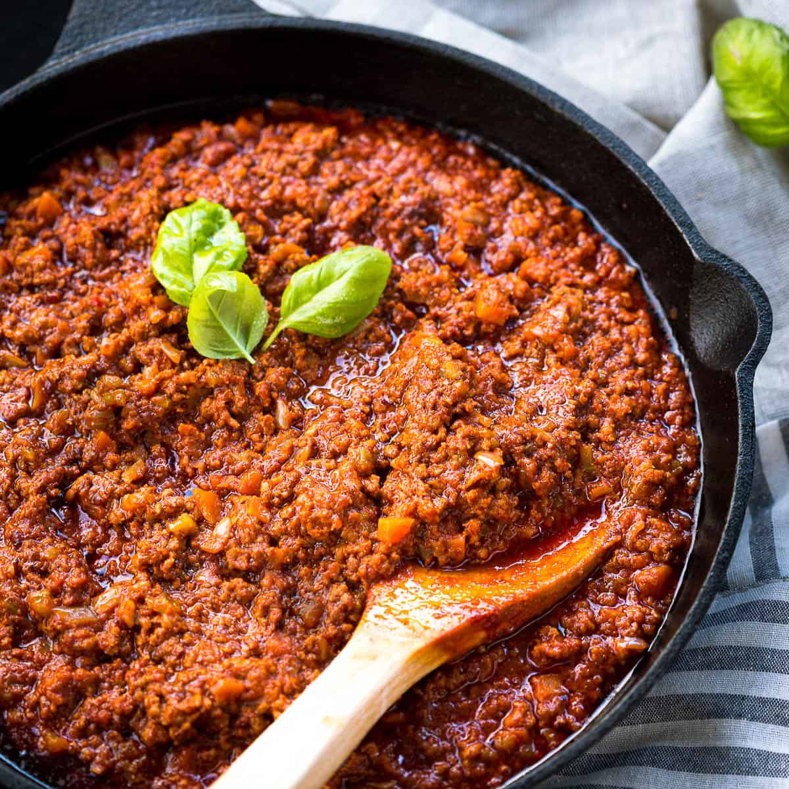

Ragu

Description
Ragù is a classic Italian meat-based sauce that is typically slow-cooked and served with pasta.
There are several regional variations, but the most well-known is Ragù alla Bolognese, originating from Bologna.
This version typically includes ground beef (sometimes pork or veal), onions, carrots, celery, tomato paste or crushed tomatoes, red or white wine, and sometimes milk or cream to soften the acidity of the tomatoes.
It's traditionally served with tagliatelle or used to layer in lasagna.
Ingrediants
- one pound of 80/20 ground chuck beef
- one large white onion
- three cloves of garlic
- one can of peeled whole tomatoes
- one cup of red wine
- one tablespoon of tomato paste
- one tablespoon of olive oil
- one teaspoon of oregano
- one teaspoon of rosemary
- one teaspoon of thyme
- one teaspoon of salt
- one teaspoon of pepper
Steps
- Heat the olive oil in a pot. While that is heating mince the garlic and add it in.
- Chop the onion and add it to the pot once the garlic begins to brown. Sweat the onion for about 4-5 minutes until
it becomes transulcent and yellow.
- Next add in the ground beef. Mix the beef in with the onion until brown and very little
any pink meat remains, then add in the tomoato paste.
- Once the meat is browned add in the wine. Let the alochol from the wine burn off for about 5 minutes at a high temp.
- Next add in your can of tomatoes. Crush them with a wooden spoon.
- Finally add in all of your spices and seasonings. Bring the ragu to a boil and then turn the heat to low, put the lid on, and let it simmer for 15-20 minutes.
Home